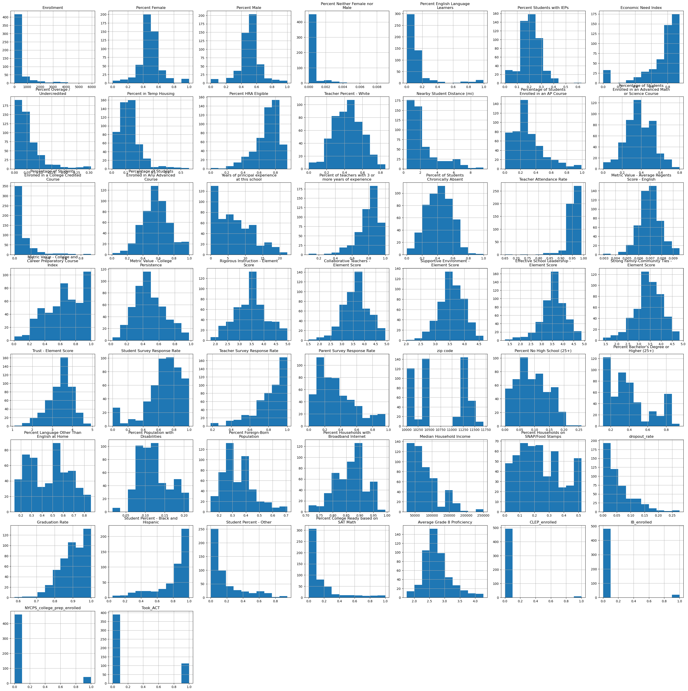
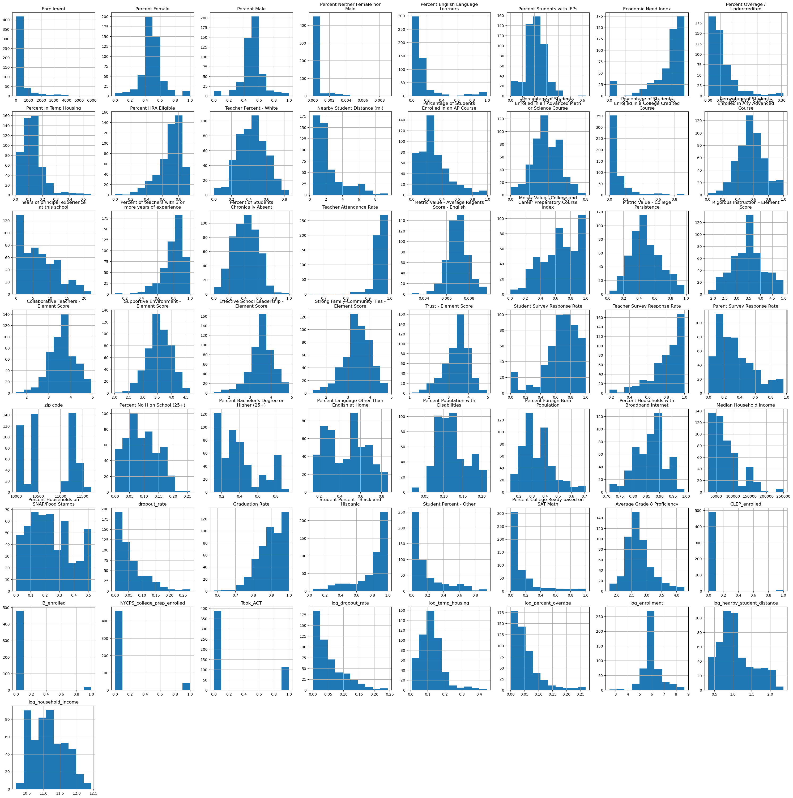
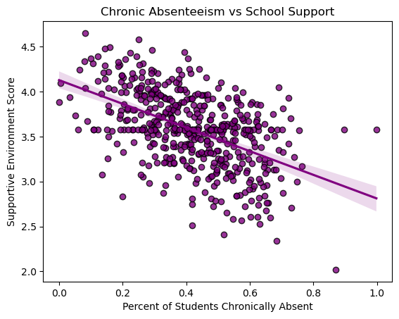
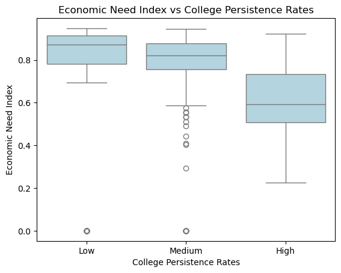
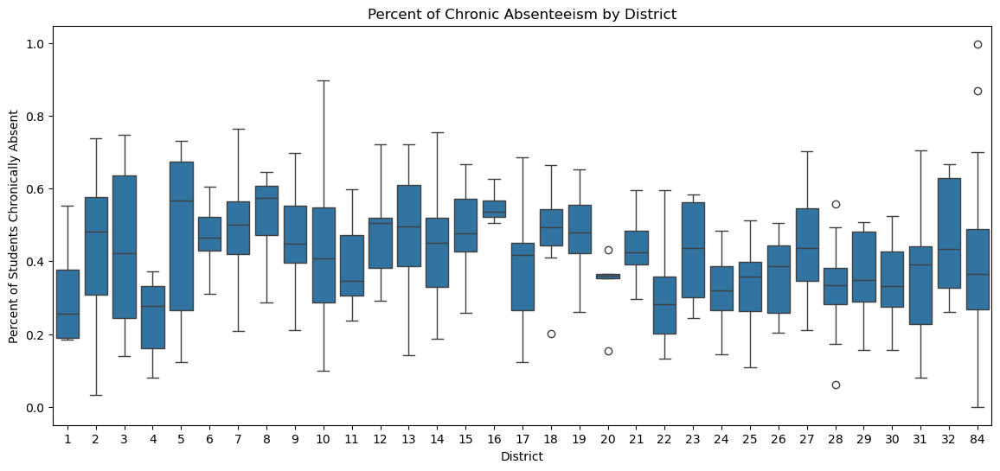
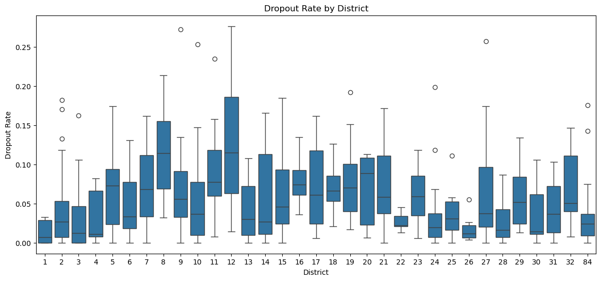

Exploratory Data Analysis (EDA) is a crucial beginning step in any data science project. On this page, I will examine distributions, analyze correlations, and uncover relationships between variables, ensuring the data is ready for the modeling phase. These insights will guide and shape our modeling approach. It is important to avoid modeling blindly and instead base our decisions on a thorough understanding of the data.
Code
import pandas as pdimport numpy as npimport matplotlib.pyplot as pltimport seaborn as snsimport textwrapimport plotly.express as pximport scipy.stats as statsfrom scipy.stats import ttest_ind, skew, kurtosis, f_onewayimport plotly.io as pio#pio.renderers.default = "notebook"pio.renderers.default ="plotly_mimetype+notebook_connected"import warningswarnings.filterwarnings('ignore')
Percentage of Students Enrolled in an Advanced Math or Science Course
501.0
0.379705
0.144616
0.00000
0.28200
0.379705
0.4840
0.80000
Percentage of Students Enrolled in a College Credited Course
501.0
0.081681
0.137217
0.00000
0.00000
0.021000
0.1150
0.92300
Percentage of Students Enrolled in Any Advanced Course
501.0
0.571937
0.175886
0.01000
0.45600
0.571937
0.6800
0.99800
Years of principal experience at this school
501.0
6.889421
5.110596
0.00000
2.20000
6.100000
10.2000
22.10000
Percent of teachers with 3 or more years of experience
501.0
0.795406
0.133245
0.08000
0.73700
0.821500
0.8820
1.00000
Percent of Students Chronically Absent
501.0
0.417344
0.161082
0.00000
0.29900
0.417344
0.5320
0.99800
Teacher Attendance Rate
501.0
0.952104
0.027447
0.65000
0.95000
0.957000
0.9630
0.99100
Metric Value - Average Regents Score - English
501.0
0.006958
0.000932
0.00291
0.00639
0.006958
0.0075
0.00956
Metric Value - College and Career Preparatory Course Index
501.0
0.656958
0.239731
0.00700
0.48700
0.667000
0.8750
1.00000
Metric Value - College Persistence
501.0
0.485317
0.186830
0.02300
0.34900
0.481000
0.6100
0.97800
Rigorous Instruction - Element Score
501.0
3.473640
0.651435
1.80000
3.03000
3.473640
3.8900
4.97000
Collaborative Teachers - Element Score
501.0
3.612056
0.583369
1.52000
3.27000
3.612056
3.9800
4.93000
Supportive Environment - Element Score
501.0
3.577099
0.417602
2.02000
3.32000
3.577099
3.8600
4.65000
Effective School Leadership - Element Score
501.0
3.552355
0.570646
1.28000
3.27000
3.560000
3.8900
4.86000
Strong Family-Community Ties - Element Score
501.0
3.442936
0.612733
1.38000
3.10000
3.442936
3.8400
4.83000
Trust - Element Score
501.0
3.392435
0.600361
1.11000
3.05000
3.450000
3.7900
4.93000
Student Survey Response Rate
501.0
0.668503
0.228916
0.00000
0.58000
0.710000
0.8300
1.00000
Teacher Survey Response Rate
501.0
0.809321
0.174717
0.18000
0.72000
0.840000
0.9500
1.00000
Parent Survey Response Rate
501.0
0.340699
0.230840
0.00000
0.16000
0.290000
0.4800
0.96000
zip code
501.0
10715.345309
535.154739
10002.00000
10302.00000
10468.000000
11217.0000
11694.00000
Percent No High School (25+)
501.0
0.092210
0.053057
0.00000
0.05200
0.084000
0.1300
0.25900
Percent Bachelor's Degree or Higher (25+)
501.0
0.394619
0.222599
0.11600
0.21600
0.339000
0.5180
0.94500
Percent Language Other Than English at Home
501.0
0.465610
0.185487
0.14000
0.31100
0.500000
0.6020
0.86300
Percent Population with Disabilities
501.0
0.122088
0.040745
0.01600
0.09000
0.117000
0.1510
0.21300
Percent Foreign-Born Population
501.0
0.339353
0.114667
0.13700
0.25400
0.316000
0.4030
0.70900
Percent Households with Broadband Internet
501.0
0.864076
0.054931
0.71100
0.82400
0.875000
0.8960
0.99400
Median Household Income
501.0
78499.157685
41488.175277
26400.00000
43985.00000
67489.000000
100190.0000
250001.00000
Percent Households on SNAP/Food Stamps
501.0
0.238082
0.142630
0.00000
0.11700
0.216000
0.3400
0.52000
dropout_rate
501.0
0.053580
0.052614
0.00000
0.01225
0.037000
0.0770
0.27650
Graduation Rate
501.0
0.899607
0.072814
0.57950
0.85300
0.908750
0.9595
1.00000
Student Percent - Black and Hispanic
501.0
0.799110
0.213992
0.04500
0.72900
0.891000
0.9490
1.00000
Student Percent - Other
501.0
0.183108
0.206603
0.00000
0.04100
0.094000
0.2520
0.94700
District
501.0
25.339321
27.018524
1.00000
8.00000
16.000000
28.0000
84.00000
Percent College Ready based on SAT Math
501.0
0.152992
0.213768
0.00000
0.02300
0.075000
0.1900
1.00000
Average Grade 8 Proficiency
501.0
2.753443
0.436318
1.75500
2.47500
2.680000
2.9550
4.27000
CLEP_enrolled
501.0
0.017964
0.132954
0.00000
0.00000
0.000000
0.0000
1.00000
IB_enrolled
501.0
0.039920
0.195967
0.00000
0.00000
0.000000
0.0000
1.00000
NYCPS_college_prep_enrolled
501.0
0.083832
0.277413
0.00000
0.00000
0.000000
0.0000
1.00000
Took_ACT
501.0
0.223553
0.417042
0.00000
0.00000
0.000000
0.0000
1.00000
Transformations
View distribution of numerical features with histogram
Code
numerical_columns = df.select_dtypes(include=['float64']).columnsaxes = df[numerical_columns].hist(figsize=(30, 30))plt.tight_layout()# wrap the titles for readabilityfor ax, col inzip(axes.flatten(), numerical_columns): wrapped_title = textwrap.fill(col, width=30) ax.set_title(wrapped_title)plt.show()

Based on these distributions, it may be necessary to transform some variables before modeling. Lets check the actual skews:
Code
skewness = df.apply(lambda col: skew(col) if col.dtype !='object'elseNone)
Code
skewness.loc[abs(skewness) >1]
Enrollment 3.738744
Percent Neither Female nor Male 5.155183
Percent English Language Learners 3.151075
Economic Need Index -1.952382
Percent Overage / Undercredited 2.173497
Percent in Temp Housing 1.785170
Percent HRA Eligible -1.271196
Nearby Student Distance (mi) 1.538479
Percentage of Students Enrolled in a College Credited Course 2.898833
Percent of teachers with 3 or more years of experience -1.445006
Teacher Attendance Rate -5.282616
Student Survey Response Rate -1.222827
Teacher Survey Response Rate -1.131656
Median Household Income 1.219752
dropout_rate 1.395944
Student Percent - Black and Hispanic -1.511319
Student Percent - Other 1.560287
District 1.464517
Percent College Ready based on SAT Math 2.235895
CLEP_enrolled 7.258441
IB_enrolled 4.700168
NYCPS_college_prep_enrolled 3.003344
Took_ACT 1.327076
dtype: float64
I will take the log of some variables of interest exhibiting the power law
numerical_columns = df_transformed.select_dtypes(include=['float64']).columnsaxes = df_transformed[numerical_columns].hist(figsize=(30, 30))plt.tight_layout()# wrap the titles for readabilityfor ax, col inzip(axes.flatten(), numerical_columns): wrapped_title = textwrap.fill(col, width=30) ax.set_title(wrapped_title)plt.show()

The distribution of drop out rate, temp housing, nearby student distance, enrollment, and household income seem more normally distributed now. I will drop the original columns and save this dataframe for later use in regression analysis.
It looks like there are some high correlations, specifically some data that is perfectly multicollinear. For example ‘Percent Female’ and ‘Percent Male’ is nearly perfectly negatively correlated and ‘Student Percent - Black and Hispanic’ and ‘Student Percent - Other’ is perfectly negatively correlated since there are only two population groups.This will have to be removed for modeling.
Statistical Testing
Lets try to uncover relationships between some of our target variables and features in the data
T-test
I will use a t test to evaluate if there is difference in the means of two groups
Dropout Rate vs Median Household Income
First, I want to see if there is a relationship between median household income and dropout rate. Looking at the graph, it appears that high median income is associated with low dropout rates. I will do a t-test to validate this assumption.
Code
sns.regplot(data=df, y='dropout_rate', x='Median Household Income', scatter_kws={'edgecolor': 'black'}, color='green')plt.title('Median Household Income vs Dropout Rate')plt.ylabel('Dropout Rate')plt.xlabel('Median Household Income')plt.show()
Null Hypothesis: There is no difference in mean median household income between schools with high dropout and low dropout rates.
Alternative Hypothesis: There is a difference in mean median household income between schools with high and low droppout rates
Conclusion: The p-value is 0.006, allowing us to reject the null hypothesis and conclude that there is significant difference in the mean median household income of schools with high dropout rates vs low dropout rates.
Chronic Absenteeism vs Supportive School Environment
Now I want to check the relationship between chronic absenteeism and a supportive school environment.
Code
sns.regplot(data=df, x='Percent of Students Chronically Absent', y='Supportive Environment - Element Score', scatter_kws={'edgecolor': 'black'}, color='purple')plt.title('Chronic Absenteeism vs School Support')plt.xlabel('Percent of Students Chronically Absent')plt.ylabel('Supportive Environment Score')plt.show()

It appears that lower supportive environment scores is associated with high rates of chronic absenteeism. A t-test can be done to validate the assumption that there is a difference in supportive score for schools with high and low chronic absenteeism
Code
high_chronic_absent = df[df['Percent of Students Chronically Absent'] >.4]['Supportive Environment - Element Score']low_chronic_absent = df[df['Percent of Students Chronically Absent'] <=.4]['Supportive Environment - Element Score']t_stat, p_value = ttest_ind(high_chronic_absent, low_chronic_absent)print(f't-value = {t_stat:.2f}, p-value = {p_value:.3f}')
t-value = -11.44, p-value = 0.000
Null Hypothesis: There is no difference in mean supportive environment score between schools with high chronic absenteeism and low chronic absenteeism.
Alternative Hypothesis: There is a difference in mean supportive environment score between schools with high chronic absenteeism and low chronic absenteeism.
Conclusion: The p-value is less than 0.05, allowing us to reject the null hypothesis and conclude that there is significant difference in the mean supportive environment element score of schools with high chronic absenteeism vs low chronic absenteeism.
ANOVA
An ANOVA test is used to evaluate if there is a difference in the means of more than two groups
Economic Need Index vs College Persistence Rates
The Economic Need Index estimates the percentage of the students at the school facing economic hardship.1 As shown by the box plot, it looks like low rates of college persistence is associated with high Economic Need Index. I will use an ANOVA test to see if there is a statistical difference in Economic Need Index between these three groups of persistence rates.
Code
df['college_persistence_ranking'] = pd.cut(df['Metric Value - College Persistence'], bins=3, labels=['Low','Medium','High'])
Code
sns.boxplot(data=df, x='college_persistence_ranking', y='Economic Need Index',color='lightblue')plt.title('Economic Need Index vs College Persistence Rates')plt.xlabel('College Persistence Rates')plt.ylabel('Economic Need Index')plt.show()

Code
anova_result = f_oneway( df[df['college_persistence_ranking']=='Low']['Economic Need Index'], df[df['college_persistence_ranking']=='Medium']['Economic Need Index'], df[df['college_persistence_ranking']=='High']['Economic Need Index'])print(f'F value = {anova_result.statistic:.2f}, p-value = {anova_result.pvalue:.3f}')
F value = 21.57, p-value = 0.000
Null Hypothesis: There is no difference in mean economic need index between schools with high, medium, and low college persistence rates.
Alternative Hypothesis: There is a difference in mean economic need index between schools with high, medium, and low college persistence rates.
Conclusion: The p-value less than 0.05, allowing us to reject the null hypothesis and conclude that there is significant difference in the mean economic need index between at least one of the college persistence ranking groups (High, Medium, Low).
Additional Visualizations
Taking a look at a box plot of dropout rates by borough, it is apparent that the Bronx has the highest rates of dropout. In addition, the median for Queens is low but there are some high outliers.
Looking at chronic absenteeism and dropout rates by district, certain districts clearly have higher medians and IQRs, especially some high spread and outliers in district 84 for chronic abseentism, and a high drop out rate in district 12.
Code
plt.figure(figsize=(14, 6))sns.boxplot(data=df, x='District', y='Percent of Students Chronically Absent')plt.title('Percent of Chronic Absenteeism by District')plt.show()

Code
plt.figure(figsize=(14, 6))sns.boxplot(data=df, x='District', y='dropout_rate')plt.title('Dropout Rate by District')plt.ylabel('Dropout Rate')plt.show()

It appears that high college persistence is associated with high average grade 8 proficiency. This emphasizes the importance of early intervention.
Code
plt.scatter(data=df, x='Metric Value - College Persistence', y='Average Grade 8 Proficiency', edgecolors='black')plt.title('College Persistence vs Average Grade 8 Proficiency')plt.xlabel('College Persistence')plt.ylabel('Average Grade 8 Proficiency')plt.show()
Lets take a look at how all three of our target metrics work together in this interactive plot
Code
fig = px.scatter(df, x='Percent of Students Chronically Absent', y='dropout_rate', color='Metric Value - College Persistence')fig.update_layout(title='Percent of Student Chronically Absent vs Dropout Rate', xaxis_title='Percent of Students Chronically Absent', yaxis_title='Dropout Rate')fig.show()
It looks like high rates of college persistence are associated with low dropout rates and low percentages of student chronically absent - a motivating example of why intervention is needed to reduce these two metrics in order to maximize college persistence!
Feature Selection
For further analysis, feature selection will done to help us prepare for modeling
Lets check what columns are most correlated with our regression target, from our transformed data
Code
numeric_columns = df_transformed.select_dtypes(include=['float64'])target_column ='Percent of Students Chronically Absent'correlations = numeric_columns.corr()[target_column].sort_values(ascending=False)positive_correlations = correlations[correlations >0]negative_correlations = correlations[correlations <0]print(positive_correlations.head(10).sort_values(ascending=False))print(negative_correlations.sort_values(ascending=True).head(15))
Percent of Students Chronically Absent 1.000000
Percent HRA Eligible 0.476284
Student Percent - Black and Hispanic 0.434400
log_dropout_rate 0.386007
Percent Students with IEPs 0.383127
log_temp_housing 0.331457
log_percent_overage 0.323949
Economic Need Index 0.215888
Percent English Language Learners 0.110565
Teacher Survey Response Rate 0.102258
Name: Percent of Students Chronically Absent, dtype: float64
Average Grade 8 Proficiency -0.558927
Percent College Ready based on SAT Math -0.554737
Metric Value - College Persistence -0.526158
Supportive Environment - Element Score -0.507653
Graduation Rate -0.477225
Student Percent - Other -0.441859
Metric Value - Average Regents Score - English -0.422453
Metric Value - College and Career Preparatory Course Index -0.418735
Took_ACT -0.347957
Rigorous Instruction - Element Score -0.324224
Percentage of Students Enrolled in Any Advanced Course -0.291525
log_enrollment -0.276258
Percentage of Students Enrolled in an AP Course -0.202747
Percentage of Students Enrolled in a College Credited Course -0.174936
Collaborative Teachers - Element Score -0.167373
Name: Percent of Students Chronically Absent, dtype: float64
Code
features = df_transformed[[ "Percent of Students Chronically Absent","Percent HRA Eligible","Student Percent - Black and Hispanic","Percent Students with IEPs","log_dropout_rate","log_temp_housing","log_percent_overage","Economic Need Index","Percent English Language Learners","Average Grade 8 Proficiency","Percent College Ready based on SAT Math","Metric Value - College Persistence","Supportive Environment - Element Score","Graduation Rate","Metric Value - Average Regents Score - English","Metric Value - College and Career Preparatory Course Index","Took_ACT", 'Rigorous Instruction - Element Score','Percentage of Students Enrolled in Any Advanced Course','log_enrollment']]
Now I have a dataset of 20 features.
One can visualize these correlations using pairplot, making sure there are no zero looking correlations, or something that looks like a big blob of dots with no apparent relationship
Code
sns.pairplot(features)
Now I will check the pairwise correlations to ensure that there are no variables that are too correlated to each other
There appears to be relationships with our target and all the features we have included, plus not too high correlations (nothing greater than |0.85|) between the features. Lets export this dataframe for our regression models.
The EDA process has provided us with valuable insights into the data, which will guide and shape the modeling process. By examining distributions, correlations, and relationships between variables, potential issues have been identified such as skewness and multicollinearity, which help identify transformations and feature engineering necessary. For example, I applied log transformations to variables exhibiting power law distributions, resulted in more normally distributed data, a key assumption for regression analysis.
I also identified significant relationships between several variables and our target metrics. T-tests showed significant differences in median household income between schools with high and low dropout rates, as well as significant differences in supportive school environment scores between schools with high and low chronic absenteeism. Similarly, the ANOVA test revealed that the there is a significant difference in Economic Need Index for schools with different levels of college persistence. These findings all highlighting the importance of addressing socioeconomic and school quality factors to improve student outcomes.
Geographic analysis further identified areas where intervention may be necessary, such as high dropout rates in the Bronx and high chronic absenteeism in district 84.
Next Steps
Data Preprocessing for Modeling: Apply transformations and drop multicollinear features that were identified using correlation heatmap.
Modeling: Develop regression models to predict chronic absenteeism and classification models to identify schools with high dropout rate and low college persistence rates.
Investigate additional transformations or feature engineering that can improve model performance.
These findings highlight the necessity to design targeted interventions in districts with high dropout rates or chronic absenteeism, focusing on socioeconomic factors and school environment. The goal is to build predictive models that can help inform these interventions to improve high school outcomes in New York City.